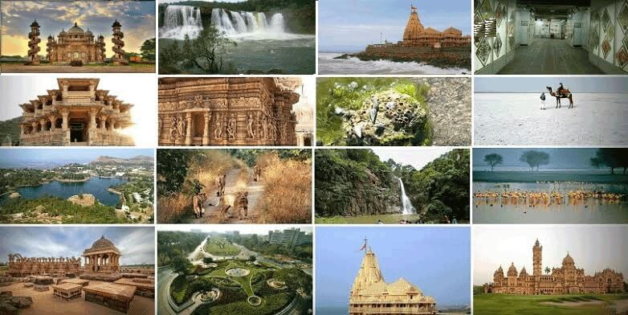

|
NorthOstensibly whimsical wandering lead the travellers |
|---|---|
 |
SouthSouth India reminds you of places you wished to see in your dreams. |
 |
CentralCentral India tourism includes Madhya Pradesh, Chattisgarh and adjoining areas of Uttar Pradesh, Maharashtra, Rajasthan states tourist places. Madhya Pradesh tourism and Chhatisgarh tourism comprises good combination of Heritage, Pilgrimage, Wildlife and Tribal tourism. Here in Central India we can find large number of Heritage tourist destinations like Gwalior, Orchha, Khajuraho, Bhopal, Mandu, Maheshwar etc. |
 |
EastDiscover the Soul of Calcutta Calcutta is the largest city in India, indeed one of the largest in the world. Established as a British trading post in the 17th century, the city rapidly grew, acquiring a life and vibrancy of its own. Its glory is still reflected in the buildings of Chowringhee and Clive Street, know as Jawaharlal Nehru Road and Netaji Subhash Road respectively. It is a city which leaves no-one indifferent-fascinating, effervescent, teeming with life, peoples, cultures. The impact can be a shock at first; the rickshaws, cars, brightly painted lorries, trolley buses, the cries of the street vendors, labourers hard at work on the construction of the vast underground railway, the noise and colour of the huge New Market, the bustle of the crowds. |
|  | WestWest India is a land of distinct cultures, lifestyles, landscapes and history. What does a wanderer truly desire? Is it just a vacation? Or is it a need to get lost, and be found? The western part of India is blessed with scenic views, long coastlines, magnificent religious centres and a truck-load of hospitality, making it one of the most popular travel destinations in India.From the hippie culture of Goa to the vibrant and responsible outlook of Gujarat, a tour to this part of India will lead you to a worthy spot at every corner. |
North IndiaOstensibly whimsical wandering lead |
South IndiaSouth India reminds you of places you |
Central IndiaSouth India reminds you of places you wished |